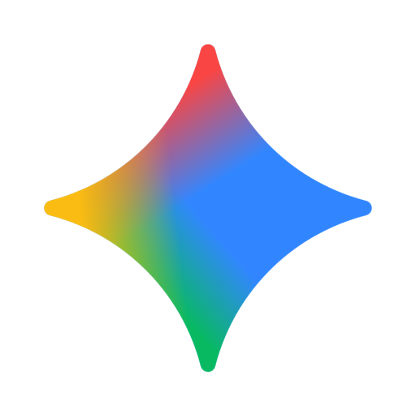

现在要做
- 把 Prompt 03 贴给 Codex
- 它问你，你按批准
两大类：账号授权，或按用量计费的 API
账号／订阅授权；主要入口；适合安装、写代码、操作项目和复杂电脑任务

申请后有 3 个月免费额度；适合图片、PDF、长文件与日常多模态任务

以前比较便宜；现在费用已接近其他 AI，目前不特别推荐。约三个月前，做客服时曾推荐
编码 Agent／工具；适合重要代码、复杂排错和项目修改
成功＝看到 Hermes 的画面，可以直接打字问它；最后新开一个窗口再验证一次
PowerShellhermes，按 EnterTerminalhermes，按 Enter